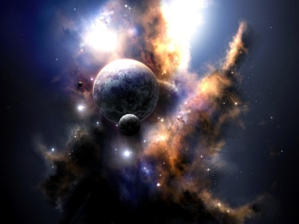

反物质
冯冯
去去来来 / 誊录
有人来函问我最近有何所见，希望我公布，以便大家对学佛的心灵现象作一参考研究。其实我懂得什么？说到学佛，我还没有进门呢，哪里谈得到有境界？就是偶有所见，亦不过是极其外行初步的一般心灵现象罢了。若要问境界，还须向真正修行研习佛法的出家人和大德去请教，才是正道，像我这些不完整的印象，恐怕很多都是外道天魔的幻影罢了。亦或者是初学修行的人常会遇见的魔障幻景而已。无论我在此发表什么，都纯粹是个人的肤浅经历，千万别当它是正道才好。
上面说的话，是对青年朋友说的，因为青年人除非是特别对佛理有研究心得者，一般人都可能只注意到异象这一类心灵现象，而忽略了学习佛教的哲理。追求超自然现象，出诸于好奇与不满现实的心理。假如我们对于佛教的兴趣，仅及于异象，而忽略佛教的哲理与精神，那就是舍本逐末了。
在佛理方面，我是尚未启蒙的人，在修行方面，亦是尚不得其法的。若果我不时会有所见，亦算是必经的一段过程的话，我相信这只是佛力给予众生的一种接引方式罢！
别说我故作谦抑，我讲的可都是至诚的真话，基于这种了解，我才敢不时公布我的浅陋见闻，确实只不过是提供给青年朋友们的一种参考，亦是盼望佛友指示我的错谬，来供我自己改进修行。
最近我所见较少，因为自己被俗务所累，静不下心来修行，也有些懒散，只有极少见闻（此刻突然停笔，因被中国大陆西北方向传来一阵强烈刺目之辐射强光射得我脑中目为之盲），脑中之目，是人人都有的，连动物都有，许多小动物，尤其是狐狸，特别敏感，可以知道在数里以外有人来临，就是因为它的额后脑中的那一颗松果腺体的作用。人若非被世俗事务及七情六欲所蔽，松果腺的感觉亦是很敏感的。所以有人能炼成天眼通。我倘然有所见，亦是在这额中央深处之眼（或松果腺）的感觉，并非两眼，不过在感觉上，是三者相连的。前年在三藩市金山寺之时，中国大陆西北方向传来之辐射强光灼伤了我的内眼，连带两眼亦有灼辣之感，曾与该寺比丘数位谈起，我对于辐射特别敏感，所以我不时突然有灼目之感，我倒情愿不见它的好。
我这一次又见到什么呢？
我前些时又在夜半静坐时，看见自己忽然又身在常去的一个藏经楼上（前次我已公布过），我不知道到底是何处？我这次翻阅高墙边上一层层的架橱，那儿有许多卷轴的经卷，里面写的字，我一字不识，好像是梵文。楼中这次另有两位僧人，一位似是梵僧，一位似是藏人，他们在整理典籍，我向他们询问，他们状若一无所闻，完全不理睬我，亦似完全看不见我。
无奈何，我自己好奇看经，注视良久，亦不解其义，但是忽然知悉其声音，我反覆诵念数次，获得大致之拼音，醒后慌忙执笔记下。这儿抄下，希望有懂得梵文或巴利文大德，看看是什么意思后示知。“Brahma Samhita”似是经卷的名字。
Yasya prab a prabhsvato jagandanda kotikotisv
asesavasud hadi vibhuti bhinnam
tad brahma niskalam anantam aseza-bhutain
govindam adi puruzam tam aham bhajami
内中只有Govindam我猜是佛陀前身之名字，其它均不知其意。
“Antavat tu phalam tesam tad bhavaty alpa medhasam”“Srimad Bhagavad gita”似是这一句出处的经卷名字。
以上都是我在似梦非梦境界中翻阅一些古经所见之一部分文字之近似拼音，是我以当时所获印象自己拼的音，并非英文拼音而是拉丁式的拼音，必定与原音有误，不过我相信仍存大意。
除上面几句之外，所见尚多，但醒来记亿不全，只有这几句是因急草写下的较为完整，我上次讲过，这种记忆为时甚短，好象软片曝光，一下就无影无踪了。
另外有些经文，我注视之下，似懂其意，兹就记亿所及，姑妄写出其大意如下列，不过要声明，并非原文，只是我当时之意会，我不识梵文，从何意会？自己亦不知。
“有一反物质，无形无体，可存于物质之内。”
“物质毁灭，反物质不可毁，物质有代谢，瞬息万变，如电光石火，反物质无时间无空间而永恒。”
 “反物质不受时间限制，大小由之。反物质永恒存在，非由于创造，非由于诞生，不生不灭，不增不减，亘古之最亘古，新幼之最幼。”（此段记得出处，是上面所阅之S．B．G．经二章二十节。）
“反物质永不凋谢枯萎，不受物质控制毁坏消灭，水不能溶，火不能焚……不可言喻，亦不可能为庸俗之头脑所思及了解。”（似是二章二十五节。）
“宇宙有正有反，即是正物质宇宙与反物质宇宙，正物质之能力分八种形态，反物质无固定形态，但，有一正必有一反。”
然后我忽然又觉身在藏经楼的另一室，一部巨大经卷自动转移，好像是现代化的幕电脑萤闪映一般，无数的奇怪古代文字，累篇累牍，我一字不识，亦无从悟其意，只可从其卷首之字获得一个猜想：似是《韦陀经》之一部分，其中有一段约略悟得其意：
“生命之形态有八百四十万种。在水中之生命有九十万种，在宇宙各星球之生命有两百万种……。人类仅是亿万种生命形态之一……其它尚有亿亿万万之生命，或系有情生，或系无情生，或系有形生，或系无形生……”
“……只有反物质，进入永恒(kala)……”
“……形与体均不外是Tamas……”
上面我用音译之两字，是因为我猜不出其意，并非故弄玄虚，或者读者中有大德知道，恳赐示。
后来尚有许多文字，越发深奥，越发难悟，我虽好奇，亦无法再看下去了。我好像是婴儿学大人看书一般，又憨又傻，我彼时的确也感觉纯真如婴儿。
我悠忽又在屋檐上飞翔玩耍，檐下僧人列队，唱颂之音甚怪，我在他们顶上飞过，亦无一人看见我，我滑翔至殿外，突然看见空中现出一位身材高大之中年伟丈夫，面貌庄严而慈祥，不甚似东土人，倒有些似印度北部潘闸省高加索山脉南麓之人，细看又不甚似，他神态非常高贵而谦和，面貌轮廓非常漂亮光明，他在空中俯视，向我微笑，状至慈受，好像是向婴儿注视的神态。
他并无留胡须，亦未见披有长发，他身穿灰袍，又似是道袍，不甚似僧衣。他并无开口讲话，但是他慈祥温和的眼睛一望我，就使我完全领悟他的意思，我身不由己，突然已贴在他的长袍脚下，双掌合十，我心中无法猜出他是谁，他头上没有任何光晕，全身并无任何光华。
我心正疑念间，低头一望，只见藏经楼与寺院已缩小如沙粒，僧侣已不可见，我发现我脚下凌空，雪峰重重，好像石堆乱放，亘古不化的喜马拉雅主峰“永恒之峰”，在群山拱护朝拜之中，在我们脚下飞驰而去，越去越远，终于消失在灰紫烟雾中。
我并未感觉到飞行，但见下面山峰细小如石子沙堆，紫气朦朦，飞快转移。
那位神人眼光指示下面世界，我心立即了然，我俯视看见一处万山丛中的小小盆地，有一处好像是国度，山岩中有一处细小喷泉，泉水浓稠好像水玻璃，汩汩缓流，观其处，似是介于新疆、西巴基斯坦与印度、苏联之间。
我不解其意，仰望神人，一接触他的光明眼神，我即已得到答案：那泉水就是“重水”！天然的重水，永保青春不老的那种青春生命之泉！但是神人的眼色意思说：即使日夕饮用，只是保持得住有形之物质生命，物质是终必要分解变化的。只要是有时间的存在，就有始点，有终点。
而时间又是什么呢？我问神人。
神人不答，只是微微一笑，突然我觉得很熟悉，就想不起他是谁？
闪电一念之间，我发现我们现正俯视着地球在空中自转，球面的蓝海反光闪闪，白云网罩着地球，回旋翻卷，欧亚大陆，美洲大陆，好象是长满苔藓的几块岩石，哪里还可见到什么人类？什么文明？什么城市？什么伟构？
我只见十大行星，连同地球在内，好像电子环绕着核子，以不同之距离不同角度，环绕着太阳旋转，作为核心的太阳，表面喷出火焰，高达十数万里，它也在自转旋转，地球是那么渺小，竟不及得太阳火焰中一处小小岩洞黑点之大。整个太阳系，高低角度不同之小粒圆珠，飞快地环绕太阳旋转，亦在自转，那细小的地球旋转速度极快，其自转速度尤其惊人，就好像我们用手使一只玻璃弹珠在桌面旋转。
在这太空之中，脱离了地球的地心吸力。脱离了地球的飞快转动，太空是没有时间的，没有！完全没有时间！而所谓空间，亦不过是相对的观念，只是从地球以有限的观念来衡量罢了。
神人的慈目含笑，我领悟了他的意思，这就是“时间”！时间只是存在于地球的自转之内与人类肉体生命之兴废代谢之中，只存在于人类的感觉之中！
那些太空星体，一闪而过，在地球上来看，已经是不知是几千百万年，但是在太空中，时间是“空”，一个彗星，越出轨道，一阵呼啸，尾巴带着百万千万个星体，汇成巨光，划过地球，从地球来看，已是不知多少万年了，因为地球自转得那么快，时间如此短促，但是在太空之中，那彗星只不过是从零到零。
是的，我看见千百个彗星闪过，其中最迟的一个，扫过地球外面不远，彗星的吸力好像巨大波浪，吸得地球翻滚，翻了一个大跟斗，滑出轨道之外，南极变成北极，北极变成南极，东变成西，西变成东，本来是向西自转的，现在因为南北易极，变成向东自转。那些云气的流向也变了，海流也变了，什么都变了……那一队彗星，渐渐失落了它的尾巴的百万个发光星体，最后只剩下箭头的一颗巨星，现在正亮晶晶，成为了一颗行星，就是熟见的金星！ 注①
我大为惊讶，只见金星横扫越过地球之时，引起球面巨大混乱，两极冰帽融化了，地球变成了水球，球面全是洪水，只有可数的几处高山峰顶尚在水面。突然好像用了放大的显微镜般地，我看见各处高峰上有些微末细小的生物，就是那些人类的幸存者，中东在土耳其与苏联交界的阿拉列山顶上有一艘棺木形的长方形方舟，搁浅在山际，中国方面的数处高峰上也有船只人影，美洲洛矶山顶也有，欧洲阿尔卑斯山巅亦有，非洲亦有……然后洪水渐退，地面又重新出现文明。
我惊疑着，这不都是五六千年前的事吗？注②
神人微笑着，我仰望他的眼睛，再望地球，它已在另一位置。现在我看见球面两处，一东、一西两大陆沉沦，一切的文明生命随之沉没，陷入白热的熔岩火海之中，另一块地壳浮现，像蛋壳碎片一般，浮在两处大陆的原址，蛋壳片上注满了海水，一处就是太平洋，一处是大西洋。沉下的地壳似都再无痕迹可寻，但是有部分碎片却又杂插在海壳之内。
我看见百幕达一带海壳底下的地层，海底有无底深坑，其上有礁层，形成欺骗的海底，又有一处在卡里滨海浅水下面，仍有旧日大陆的文明遗迹，海底有人造的巨大石墙，连亘百里，于是我又看见南太平洋（实在是北太平洋，那时因地轴尚未被金星吸引翻转，在那之前不知几亿万年），旧日陷落地壳之层，又上升一部分，成为尖顶岛屿…… 于是我又看见人类文明，在今日之南美洲秘鲁智利一带山上繁荣，成为当时最高之文明，不久又见中东埃及文明之兴起，不久又见中国文明之蓬勃，印度之文化昌隆……。
一切都在闪电一念之间。
神人望我微笑，我一闪又见地球原是荒凉，球面原都是固体陆地，突然迸裂，许多块地壳，好像破碎之蛋壳，浮在蛋白之上，蛋白就是熔岩，地心的熔岩更热，就是蛋黄。蛋壳在球面的表层漂浮不定，忽浮忽沉，互相碰撞，又互相分离。两大洋的数块巨大地壳下沉之后，非洲大陆从南美洲分裂，各自东西，欧洲大陆地壳从北美与南美之间的中美洲脱离。欧亚大陆向东飘移，非洲亦向东北移动，围成了地中海，印度大陆地壳原本在非洲东南脚下，渐渐向东北移动，撞上亚洲西南之西藏平原，一撞使地层上升，形成喜马拉雅山脉，西藏成为高原，西藏地壳却仍是最薄的，比别处薄得多，东海与台湾海峡下沉成为海洋，亚洲古大陆边缘成了日本、台湾。太平洋海壳底下，地心喷火，火山一连串陆续出现，成为夏威夷，中途岛……南亚古大陆边缘却移向南边，成为一串南洋群岛，澳洲从南极（当时的北极）漂来到现在位置。中国与西伯利亚原是炎热之南方，中原原是赤道地带……加拿大亦原是热带……。
 我又看见南北两极，各有一无底深洞，形如两头相通之线络之孔，或者轴心。
我又看见南北两极，各有一无底深洞，形如两头相通之线络之孔，或者轴心。
这算是古老了吗？还早呢！
我又看见在此之更前之亘古，那些地壳，无论陆地海洋之地壳，不知浮沉升降了多少次，不知多少地壳整座突然熔化于熔岩之中，又有另一批地壳形成升起，生命亦不知出现过多少种形式，随着地壳出现消灭，人类文明不知出现过多少千百次，或则数千年，或则数万年，整个天体又起了变化，彗星扫越，地球翻转，星球逼近，地壳翻转，底作面，面作底，融化沉没……
只能掘下数十尺乃至数百尺深的考古学家，必定要讥笑我的见闻，，他们找不到证据啊！我心中惊骇，无法形容。
然后我又看见地球原是一团火球，在太虚中旋转，渐渐表面冷却，形成地壳的薄薄表层，那些蛋壳片，或者冰块，或者奶油凝脂，人类是多么渺小啊！小到连看都看不见！
然后我看见太阳爆炸，飞出许多小点火球，一点点绕着核心旋转，渐渐冷却，成为行星，什么木星、土星、火星、水星……但是金星并不是太阳的子孙，如前是上面说的，最后才偶然闯入太阳系来的，被扣留的一颗失去尾巴的彗星，它是从银河系另一方向闯来的。
然后我又看见一个更比太阳巨大不知几亿兆倍的白热火球爆炸，几亿个火点飞出，又环绕它飞转，光华灿烂，在太空黑暗无边之中，火光夺目，照明了不知多少亿兆光年的空间，这些星云像旋风般地旋转着，各星云之洪流中，携着兆亿计的星体，这个旋转不息的巨大无比星云之团，中心是灼热的白球，密度甚大，外围的星云洪流较为疏散，就像调拌面粉或用电动打蛋器打蛋糕的样子，是一个巨大的旋涡，不过它是无比巨大的光与热的漩涡，而太阳系只不过是这个漩涡最外边缘的一个小小面粉点儿，行星与地球又是这小面粉点儿的里面的微小尘点。从边缘望上去这个旋涡的平面侧面，它就是所谓的“银河”了。其实居高临下一望，它是个巨大的圆形漩涡，从上面俯视，它的旋转是顺时针方向的，从底下仰视，它是反时针方向的。
那光漩的形状，它的四条外围的漩臂，突然令我想起一件事物来。现在我才明白，佛教的“卍”原来就是从这儿来的，原来是银河系的旋转形状，象征着永恒、光明、与莫测的高深伟大智慧。前者我在定中阅卷，见载称它是被陆沉古代文明称之为太阳的象征，其实还不甚正确，非得要身在太虚之上，俯视银河系之光漩，否则无法领悟。
神人微微一笑，我徒然惊觉，我又看见在那无边无垠的黑暗太虚之中，还有无数的光漩星云，不知有几亿几兆，所谓“银河系”，不过是其中最小的一面而已。到处都有类似的光漩星云，有直立的，状如碟子的，有斜立的，有平放的，光华颜色何止千种！都是像“卍”形的。
现在我懂了！这才是“卍”的真正来源，原来它蕴含着宇宙大智慧的玄机！
我再看，整个宇宙的黑暗无垠空间，亦是在旋转移动之中，亦是“卍”形的。宇宙之外，又有无限的更多宇宙，无穷无尽，互相连接沟通，互相存在于当中，在星云与星云之间的空间，有无数的淡薄气体与尘粒，有纤维形状的生命形态，它们亦有智慧，它们不断在演变，它们有感觉，它们感觉到我，我也感觉到它们，它们当然不是呼吸氧气的生物，未必一定都像地球的生命之需要氧气，我感觉到它们生存于氢气之中，或者是碳气之中。
我看见有无数的星球与星云中存在着无数奇形怪状的生命形式，有些存在于数千度的高温之中，地球人类可能会被一灼成为飞灰，但是他们若无其事，他们亦具有近似地球人类之形体，但是并不完全一样，他们是虚无的，他们是“反物质”的，在他们自己来说，他们是实，而我才是“反物质”，我才是“虚”，因为他们可以进入我。于是我又看见更多的生命，包括半人半马，半人半鱼……他们存在于与我们地球不同的气压温度之下，他们有些以呼吸氦气为生，有些根本不呼吸，只是吸收辐射的能源，有些只是吸收宇宙线，甘玛线、艾发线……有些存在于我们认为零下数千度的奇寒冰雪之中（或者是氨气形成的冰）。
于是我又看见，宇宙之中，原来并无时间，没有始没有终，亦没有空间限制，因为亦是无始亦无终，从一个星云到另一个，从太阳系地球渺小的人类看上去，旅行需要几十百万光年，星光射到地球，已是几多光年之后，我们说，看见的已经是几万光年之前的事，现在已不存在了。但是，我现在才明白，在这个宇宙之中，原无时空，几百几亿光年，也都是一刹那，亦都是“现在”，并无过去，亦无未来。
从宇宙望向地球，并无时间，何来光年？并无空间，何来光年？一切都是现在，一切都是眼前，一切都是永恒，亦一切都是过去，一切都是未来，过去现在未来，都只是地球的观念，多少里？多少光年？也只是地球人类的物质观念。
神人向我微笑颔首，我突然又感觉到，宇宙之内又有宇宙，即是在物质的宇宙之内，又有反物质的宇宙，彼此都是相对的，也是有正一负的，也是互相感到对方是空虚反物质的。是的，有无穷之物质宇宙，其中亦有无穷的反物质宇宙！
太玄了吗？是“白马非马”之辩吗？不是的，绝对不是！只有身在宇宙之中，远离了狭小的地球物质世界，俯视仰望，见到无穷宇宙，才会有此感悟，转念及人世的许多纷扰烦恼，多么不值得啊！
神人的微笑眼神给我一个启示，我明白了，我若要跳出生死，跳出烦恼，不生不灭，只有追随他，到这宇宙当中来，让我的智慧之非物质知觉，存在于永恒之中。但是，神人又是谁呢？
你不认识我了？神人慈祥微笑，他背后突然升起了巨大的火焰光华，头上出现佛光，光照宇宙的黑暗。
“你日夜祈祷我，念我名号，你倒不认识了？”神人并未开口，但是我可知他眼中之意。
“观世音菩萨！”我猛然悟出了他是谁，不过我诧异他并非世俗所传绘的女身法相。
是的，我已恍悟因缘，我万分感激，我立时拜倒，我可以感觉到菩萨之意，叫我不必再回尘世去了，我知道菩萨是一种崇高的无比大智慧能力，他也是反物质的，一种“能”，我知道是他的能力将我的意识提成一种“能”的形式，所以才能感觉来到了太虚的宇宙之中，瞬息畅游正反物质的宇宙，看到一切！
我知道尘世的臭皮囊并无可留恋，可是突然我悲从中来，我念念不忘生我育我劬劳我的老母亲，我纵然自己跳出生死，识在永恒之中，不生不灭，抛弃慈母，又有何意义呢？
我启禀菩萨，我须回家侍母修行，盼将来能同回来皈依。如若不能，亦只有听缘分罢了。
菩萨微微一笑颔首，溶化于太虚空之中。我张目回望，身在书房，时值子夜一时许，我入定中或梦中，前后只不过半小时，我母亲在邻室打坐念经。
我的记忆渐消，只记得还看见了地球未来的爆炸，一切都毁灭，衰老的太阳也终于爆炸毁灭了，所有的星球天体都是有生有死的，形成了，爆炸毁灭，化为太空游离的反物质，将来又再化合为物质而旋转，成为新的星体。
网注 ①
在1950年伊曼努．维利考夫斯基 ( Immanuel Velikovsky )所著作的超级畅销书‘冲突的宇宙’( Worlds in Collision )中曾提及这个具冲击性的论点。
一般来说金星的起源和其他太阳系行星一样：原始太阳系星云旋转的结果，质量大部分是集中在中心形成太阳，剩下的星云则形成旋转原盘，其中固体微粒子浓缩为小行星。经过反覆碰撞及结合之后就诞生了各行星。
可是相对于这种说法，也有科学家认为金星是在更遥远之后的年代，因其他因素而诞生的。
纪元前两千年～一千五百年左右，太阳系最大的行星木星发生大爆炸，其一部份在宇宙太空就被弹开、变成了慧星。由于这个慧星轨道并不稳定，在纪元前一千五百年左右，就异常接近地球，在世界各地引起大异变。
在太阳空间流连的这个慧星，又在纪元前八百年左右异常接近火星，不只在那里引起大规模的灾变，也让火星的轨道紊乱。结果这次火星大大接近地球，使地球再度沉沦于大灾害当中。
另一方面，慧星受到太阳引力的影响，渐渐地描绘出接近正圆形的椭圆形轨道，在地球与水星之间稳定下来，成为太阳系的第二行星。那就是现在我们都称为金星的天体。
记载于世界古书中的大异变真相：
维利考夫斯基将《旧约圣经》当作是主要的资料，更以从世界各地收集而来的庞大神话、传说、口碑、古文献等为参考，确认了在纪元前一千五百年左右与纪元前八百年左右时，发生了地球规模的大变动。在他演绎性地慢慢追纵其大异变的原因后，便得到了令人惊讶的结论。
维利考夫斯基先设定在纪元前二千年以前是没有金星存在的，他这样表示该根据：“在可能于纪元前三一○三年制作出来的古印度行星表中，在肉眼可见的行星当中，唯独欠缺了金星。古婆罗门并不知道五行星“木星、金星、火星、木星、土星”的体系，到了后世，婆罗门才提到了五行星;。巴比伦天文学也早就拥有了（不包括金星）四行星的体系。在古代的祈祷当中，有提到土星、木星、火星、水星，但欠缺了金星……”
也就是说，不管是古印度还是巴比伦，天空中没有提到金星，几乎就表示了在当时的行星中，金星不被认为是存在的。
那么，为何维利考夫斯基会认为金星是因为木星的大爆炸、被弹开所形成的慧星呢？
“在古代的任何一个国家中，都可以找到关于金星诞生的宇宙开辟式的神话。要找寻表现金星的神或是女神的话，我们就必须去寻找在数种神或女神当中，哪一个是一开始就不存在的？叽一个是在家族当中诞生的？
所有的民族神话就只有举出金星的诞生。木星、土星、火星的诞生则没有把它们视为问题。”
维利考夫斯基除了这样指出，并检证了各民族所流传的、关于金星诞生的神话或传说。以下来介绍其中一部分。
----在希腊神话中，突然从空中出现的女神是雅典娜．帕森农（金星）。她是从宙斯（木星）的头部飞出来的。宙斯在云中掩藏了尚末出生的雅典娜，再用闪电把她给劈开。
-----在亚述．巴比伦当中，“伊诗达”本来是木星的名字，但之后变成金星的名字，木星则有了“马尔多克”之名。
----在埃及的某个地区。“以西斯”是木星原来的名字。在其他地方“后洛斯”则是木星的名字。
----波里尼西亚的某个岛上，金星与木星是被混淆的，它们共同拥有“法玛”或“帕乌皮堤”这个名字。
关于这些传说，维利考夫斯基这样解释：“当新行星（金星）由木星诞生而来到天空时，目击者们无法理解这个变化的含义而感到混乱，于是就把原先木星名字的伊诗达、以西斯、后洛斯等名字套在金星身上。”也就是说，前面所列举的神话或传说，正暗示着金星是木星诞生的故事。
另外，关于“由木星释放出来的金星，初期样貌是慧星”这一点，他是这样说明的：“在哥伦布以前所写的墨西哥古老传说中，曾记载着金星是会冒烟。墨西哥人除了将金星称之为‘会冒烟的星球’，也可以说他们一直是把金星当作是慧星的。”
更且，从“金星是垂挂着火的”的犹太人传说纪录、“金星是有胡须的”的勒底人的古纪录、描述“金星就像是冒着烟的火”的古印度梵文的记述等，都几乎可很有把握地推论，金星在初期其实是慧星了。
这种伟大的假说具有何种程度的可信度呢？
当然，正统派的天文学者完全不屑一顾，只把它当作胡扯瞎说罢了。可是，如果伟大的物理学家爱因斯坦寄予深厚期望，又会是如何呢？
据说爱因斯坦在死前曾经明讲：“应该举办科学研讨会，进行维利考夫斯基假说的再度研讨。”
不只如此，据说在爱因斯坦死后，他桌上也发现了一本《冲突的宇宙》。
此外，金星和其他行星相较、进行着不同的运动，这也是科学上的事实。金星的自转周期为两百四十二．九八天、公转周期为两百二十四．七一天，自转周期比较久。进行这种运动的行星满，就只有金星而已。
而且，其自转的方向是异常的。其他的太阳系行星是从西往东自转的（天王星的自转轴面对公转面是横向倒下的），但只有金星是逆向，也就是由东往西的方向自转。
金星又叫作地球的双子行星，其环境迥然不然。金星的赤道半径是六千零五十二公里、地球的则是六千三百七十八公里。平均密度几乎一样。内部造也十分相似。它们的中心都有核心，外侧是由地函及地壳所包围着。不过，金星的环境和地球是大异其趣的。例如地表温度是四百七十℃，以二氧化碳为主份的大气是九十气压，云的主要构构成物质则是硫酸。虽然推测化应该是温室效应严重影响之下的结果，但真相究竟是如何呢？
根据过去的说法，金星与其他太阳系行星几乎是同一时期诞生的。可是，光是将接近中的地球与金星相比，就有很大的差异。
当然，不能说这些科学上的事实和维利考夫斯基假说有直接的关联，但只有金星是相当异常的行星，这一点就绝对无误。
补充一点：维利考夫斯基只是单纯以旧约圣经等古籍中去推测出他的结论，并不一定代表就是事实，但在宇宙空间中没有解开的谜题确有无数个，因此他的学说依然令人玩味。
资料来源：http://tw.knowledge.yahoo.com/question/question?qid=1005011201604
参考资料：卡尔。萨根《宇宙》第四章：天堂与地狱
网注 ②
1978年5月1日，冯冯在《反物质》提及：
“我看见千百个彗星闪过，其中最迟的一个，扫过地球外面不远，彗星的吸力好像巨大波浪，吸得地球翻滚，翻了一个大跟斗，滑出轨道之外，南极变成北极，北极变成南极，东变成西，西变成东，本来是向西自转的，现在因为南北易极，变成向东自转。那些云气的流向也变了，海流也变了，什么都变了……那一队彗星，渐渐失落了它的尾巴的百万个发光星体，最后只剩下箭头的一颗巨星，现在正亮晶晶，成为了一颗行星，就是熟见的金星！我大为惊讶，只见金星横扫越过地球之时，引起球面巨大混乱，两极冰帽融化了，地球变成了水球，球面全是洪水，只有可数的几处高山峰顶尚在水面。突然好像用了放大的显微镜般地，我看见各处高峰上有些微末细小的生物，就是那些人类的幸存者，中东在土耳其与苏联交界的阿拉列山顶上有一艘棺木形的长方形方舟，搁浅在山际，中国方面的数处高峰上也有船只人影，美洲洛矶山顶也有，欧洲阿尔卑斯山巅亦有，非洲亦有……然后洪水渐退，地面又重新出现文明。我惊疑着，这不都是五六千年前的事吗？”
1982年2月1日，冯冯在《地球千层光环失踪之谜》一文，将金星横扫地球的时间改写：
“大约三千五百万年前，地球的南美洲南方尖端和南极洲是北极，而今之北美洲加拿大与格陵兰、西伯利亚，都是在南极。地球受到无比巨大的入侵慧星横扫而过，波浪力量使地球的轴心突然翻转，于是北极转向下方，南极转向北方，南北互易，东西互换。 ……”
永忏楼随笔之二十一 ──《反物质》
原载香港《内明》第74期：1978年05月1日
书名：夜半钟声
作者：冯冯
出版：天华出版事业股份有限公司